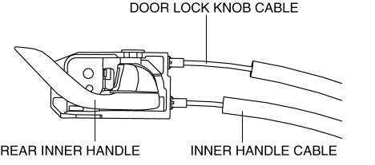

< Previous
Next >
2014 -
Mazda6 -
Body and Accessories
INNER HANDLE REMOVAL/INSTALLATION
Front Inner Handle
1. Disconnect the negative battery cable. (See NEGATIVE BATTERY CABLE DISCONNECTION/CONNECTION [SKYACTIV-G 2.5].)
2. Remove the inner garnish. (See INNER GARNISH REMOVAL/INSTALLATION.)
3. Remove the front door trim. (See FRONT DOOR TRIM REMOVAL/INSTALLATION.)
4. Disconnect the door lock knob cable and the inner handle cable from the front inner handle.
5. Install in the reverse order of removal.
Rear Inner Handle
1. Disconnect the negative battery cable. (See NEGATIVE BATTERY CABLE DISCONNECTION/CONNECTION [SKYACTIV-G 2.5].)
2. Remove the rear door trim. (See REAR DOOR TRIM REMOVAL/INSTALLATION.)
3. Disconnect the door lock knob cable and the inner handle cable from the rear inner handle.

4. Install in the reverse order of removal.
< Previous
Next >
© 2012 Mazda North American Operations, U.S.A.